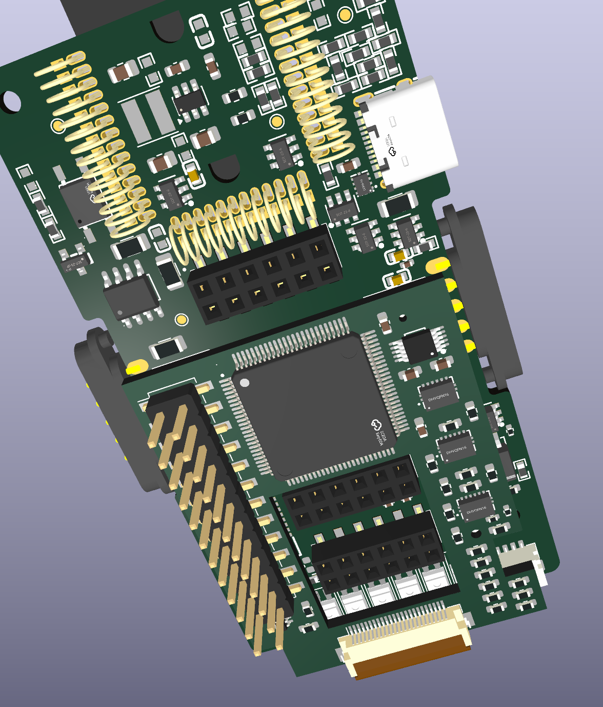
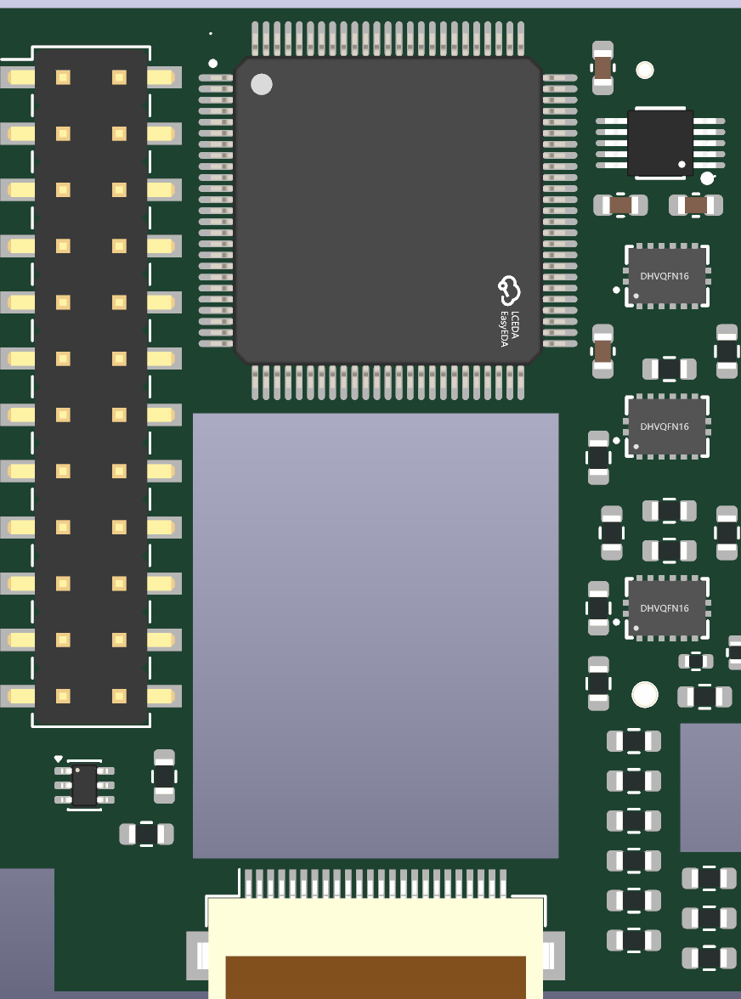
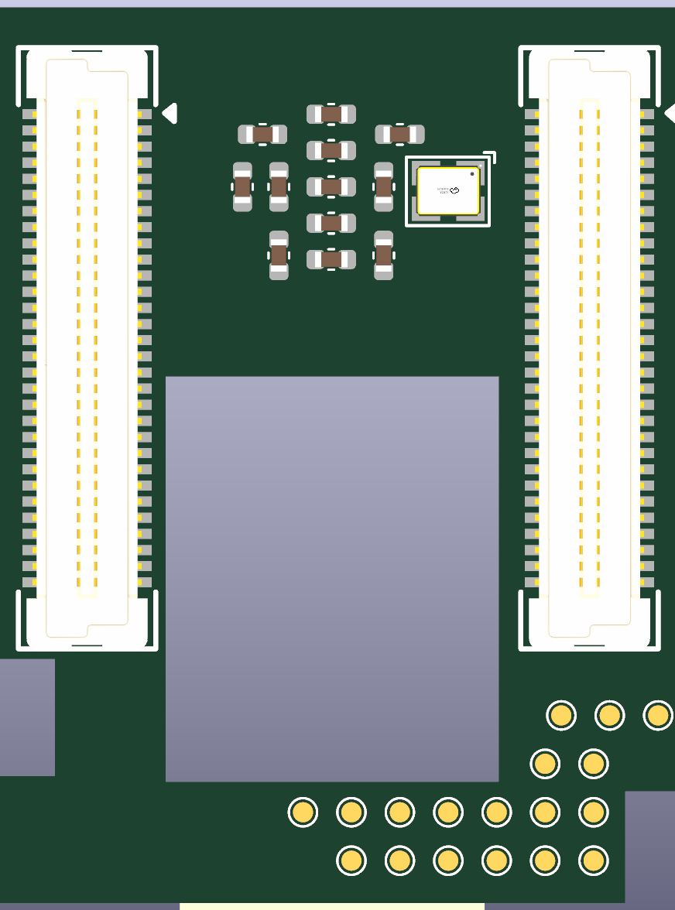

Carrier + mezzanina AG32
Disposizione aggiornata, senza sbroglio. Contorno esterno e componenti bloccati conservati; rimossa la vecchia asola FPC.
Pila nominale:5mm tra le schede, più1,6mm PCB modulo. Finestra per J1/J140; J3, ESP e fissaggi accessibili. Flat sul lato corto inferiore, AUX SMT laterale. USB spostata più in alto sul lato destro.
979 controlli piazzola/rete e120 contatti accoppiati passati. Nessun corto o clearance rame introdotti dal piazzamento. Restano due verifiche meccaniche dei piolini sotto AUX e problemi DRC preesistenti carrier: non produrre ancora. La finestra ha margine nominale minimo0,63mm rispetto al corpo Harwin: prova fisica e tolleranze ancora necessarie.Modulo top

Modulo bottom

Specifiche e verifiche complete · Mappa elettrica